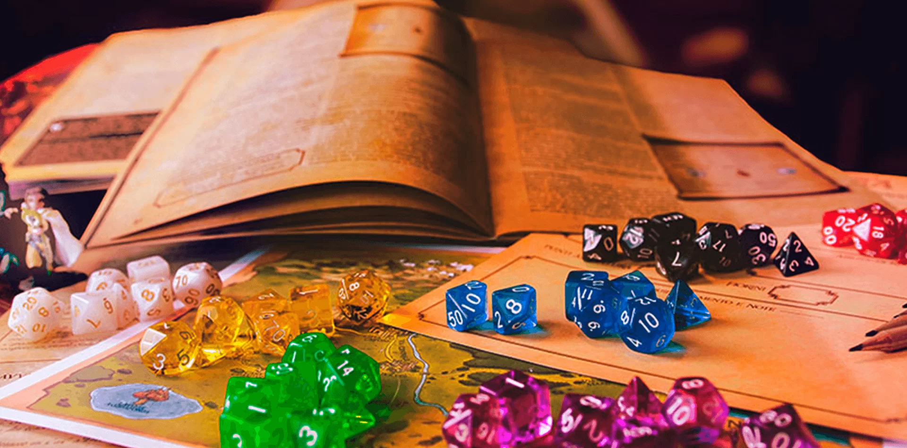
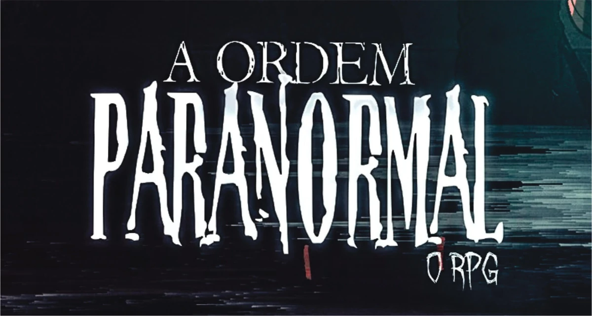

RPG significa Role Playing Game, ou “jogo de interpretação de papéis”.Nesse tipo de jogo, cada pessoa cria um personagem e participa de uma história interativa, como se estivesse dentro de um filme, livro ou série. Diferente de videogames, no RPG você pode fazer praticamente qualquer ação que imaginar. Um jogador pode tentar investigar um crime, conversar com NPCs, enfrentar monstros, lançar magia ou até fugir de um perigo. Quem controla o mundo e narra a história é o Mestre (ou Narrador). As ações normalmente são decididas usando dados, principalmente o famoso d20 (dado de 20 lados). O resultado dos dados, junto das habilidades do personagem, define se a ação foi bem-sucedida ou não.
Interpretação
Criatividade
História
Trabalho em equipe
Regras e sistemas
Evolução dos personagens
Dungeons & Dragons
Call of Cthulhu
ormenta20
Fantasia medieval
Terror
Ficção científica
Investigação
Super-heróis
Paranormal
Pós-apocalipse
E foi justamente nesse cenário que surgiu uma das maiores franquias brasileiras de RPG: **Ordem Paranormal
Rafael Lange, conhecido como Cellbit, criou Ordem Paranormal em 2020 como uma série de RPG transmitida ao vivo na Twitch e no YouTube. A franquia mistura:
Terror
Investigação
Suspense
Horror psicológico
Ação sobrenatural
A história gira em torno do paranormal e do chamado Outro Lado, uma dimensão cheia de entidades monstruosas que tentam atravessar para o mundo real. Para impedir isso, existe uma organização secreta chamada **Ordo Realitas**, responsável por investigar e combater ameaças paranormais. ([Ordem Paranormal][1]) Com o sucesso das transmissões, Ordem Paranormal cresceu rapidamente e virou:
Livro oficial de RPG
Universo expandido
Comunidade gigantesca
Jogo eletrônico
HQs
Produtos oficiais
Hoje é considerado um dos maiores fenômenos brasileiros de RPG de mesa.
A primeira campanha começou em fevereiro de 2020. Segundo o próprio Cellbit, a inspiração inicial veio de sistemas de horror investigativo como The Esoterrorists. ([Ordem Paranormal][1]) A primeira temporada foi:
Depois vieram: * **O Segredo na Floresta** * **Desconjuração** * **Calamidade** * **O Segredo na Ilha** * **Sinais do Outro Lado** * Outras campanhas derivadas As transmissões ficaram famosas pela: * Produção cinematográfica * Trilha sonora * Personagens marcantes * Mistérios complexos * Atuações dos jogadores O sistema oficial começou a tomar forma principalmente durante **Calamidade**, quando o RPG passou a usar regras próprias em vez de adaptações de outros sistemas. ([Ordem Paranormal][3]) --- # O Livro Oficial de Regras O sistema oficial foi lançado em 2022 pela [Jambô Editora](https://jamboeditora.com.br?utm_source=chatgpt.com). O livro possui: * Mais de 300 páginas * Sistema completo * Criação de personagens * Bestiário * Rituais * Equipamentos * Regras de combate * Lore do universo O sistema foi desenvolvido por Cellbit junto de criadores ligados a Tormenta20 e Skyfall RPG. ([Ordem Paranormal][3]) --- # O universo de Ordem Paranormal No universo de Ordem Paranormal existe uma barreira chamada **Membrana**, que separa a realidade do Outro Lado. Quando essa barreira enfraquece: * Criaturas aparecem * Rituais funcionam * O paranormal invade a realidade O medo humano fortalece o Outro Lado. Quanto mais medo, maior a influência paranormal. ([MesaQuest][4]) O universo mistura: * Horror cósmico * Investigação policial * Terror psicológico * Cultos secretos * Entidades sobrenaturais --- # Como jogar Ordem Paranormal? O RPG funciona em sessões narradas por um mestre. ## 1. O Mestre cria a campanha Ele prepara: * Mistérios * NPCs * Criaturas * Cenários * Missões --- ## 2. Os jogadores criam personagens Cada jogador monta sua ficha com: * Classe * Origem * Atributos * Perícias * Equipamentos --- ## 3. A aventura começa Os personagens investigam eventos paranormais e enfrentam criaturas do Outro Lado. O jogo incentiva: * Trabalho em equipe * Estratégia * Investigação * Interpretação --- # Como funcionam as regras? O sistema utiliza principalmente o **d20**. As ações são resolvidas através de testes. Por exemplo: * Atacar * Investigar * Convencer alguém * Resistir ao medo Tudo depende dos atributos e das perícias do personagem. O sistema usa múltiplos d20 dependendo do atributo: Resultado = \max(d20_1,d20_2,...,d20_n)+B\hat{o}nus Se o personagem tiver Agilidade 3: * ele rola 3d20 * escolhe o maior valor * soma bônus ([Ordem Paranormal][3]) --- # Os atributos Os personagens possuem 5 atributos principais:Apesar do enorme sucesso, parte da comunidade critica alguns aspectos do sistema:
Balanceamento
Dependência de homebrew
Complexidade de certas mecânicas
O universo
A atmosfera
O terror investigativo
A criatividade das campanhas
Rafael Lange conseguiu transformar uma simples mesa de RPG em uma das maiores franquias brasileiras da internet. Ordem Paranormal mistura:
Terror
Mistério
Investigação
Drama
Combate
Horror psicológico
E criou um universo extremamente rico, cheio de criaturas, rituais e histórias marcantes. Além de entreter milhões de pessoas, a franquia também ajudou a popularizar o RPG de mesa no Brasil, apresentando esse tipo de jogo para uma nova geração de jogadores.
